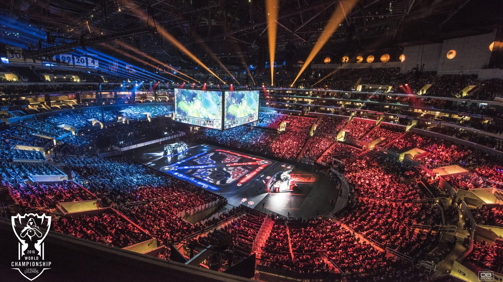

O que são os E-Sports
Esporte eletrônico, ciberesporte ou E-sports, são alguns dos termos usados para as competições organizadas de jogos eletrônicos, especialmente entre os profissionais. Os gêneros de jogos mais comuns associados com esportes eletrônicos são os de RTS, luta, FPS, e MOBA. Eventos como o Intel Extreme Masters e o WCG fornecem tanto transmissões ao vivo de competições, como prêmios em dinheiro para os concorrentes.

Final do mundial de League of Legends- 2016
Embora os esportes eletrônicos tenham sido uma parte da cultura de jogos eletrônicos, as competições têm visto um grande aumento de popularidade nos últimos anos. Enquanto as competições antes do ano 2000 foram em grande parte entre amadores, a proliferação de competições profissionais e crescente audiência agora apoia um número significativo de jogadores profissionais e equipes, e muitos desenvolvedores de jogos agora implementam recursos em seus jogos projetados para facilitar modos competitivos.
Historicamente, os esportes eletrônicos eram dirigidos a uma pequena audiência de nicho, com pouca representação nos meios de comunicação de massa, como a televisão. Devido a isso, a crescente disponibilidade de plataformas de streaming de vídeo on-line, especialmente a Twitch.tv, tornaram-se centrais para competições de eSports atuais. O primeiro jogo a ser considerado um Esporte Eletrônico foi o Netrek, pela revista Wired em 1993. Atualmente, os títulos mais populares em competições profissionais são League of legends, DotA 2, StarCraft II e Counter-Strike: Global Offensive.
O mercado global de eSports gerou um lucro de 325 milhões de dólares em 2015 e espera lucrar US$463 milhões em 2016; o público mundial de eSports em 2015 foi de 226 milhões de pessoas.
Premiações
Depois de eventos marcantes na história, o E-Sports só vem crescendo, cada vez mais fãs, jogadores, equipes e patrocinadores, tudo isso resultando em grandes premiações. Em 2017 alguns jogos foram analisados e 5 deles foram os jogos mais bem pagos para seus atletas:
1- Em primeiro lugar veio o jogo DOTA 2 com premiações que chegaram à U$ 35 milhões em suas competições;
2- Em segundo aparece Counter Strike (CS) com a soma de U$ 11 milhões em premiações;
3- Em terceiro lugar League of Legends com U$ 9 milhões;
4- Em quarto lugar aparece Heroes of the Storm com US$ 5 milhões;
5- E por último vem Call of Duty com também US$ 4 milhões;